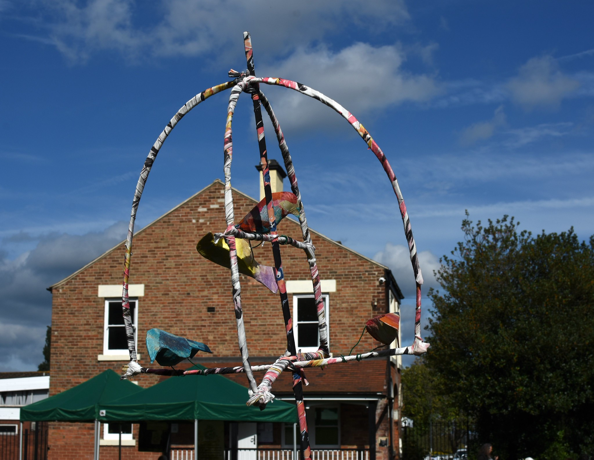
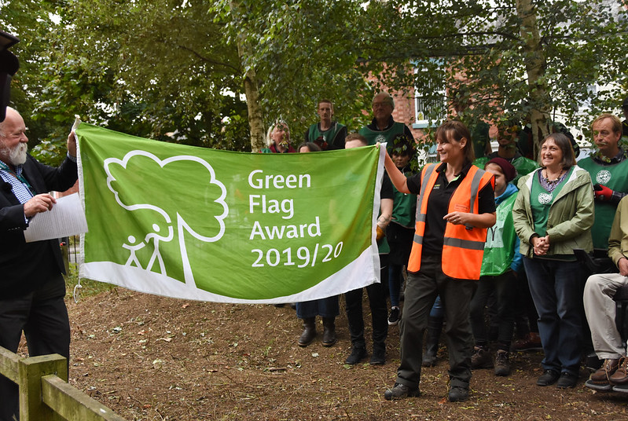

The Friends of Derby Arboretum — a passionate community of volunteers dedicated to this remarkable green space.
The Friends of Derby Arboretum was established to bring together people who care deeply about this nationally significant park — working to protect its heritage, improve its facilities, and organise activities that help the whole community enjoy and appreciate it.
We work in partnership with Derby City Council and other local organisations to ensure the Arboretum continues to flourish as a green, welcoming, and historically rich space for everyone.

In July 2025 we were awarded a further prestigious Green Flag Award and for the fifth time achieved Green Heritage Site Accreditation.
In November 2023 we received the King's Award for Voluntary Service. This is the highest award a local voluntary group can receive in the UK.

Whether you want to volunteer, attend events, or simply support the Arboretum, we'd love to have you involved. Membership is open to everyone.
Find out how to join